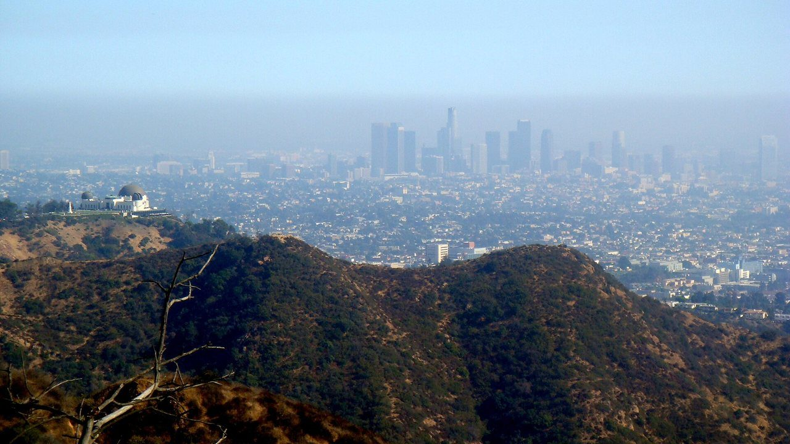

Race, Mulholland Drive

Behind
Best +0:01
371W
Target 418 W-47 W
- Cadence
- 87rpm
- Heart
- 140bpm
- Speed
- 26.5km/h
Work4 of 17
0:26
Next: · 2:00 at level 24
+1.9%
44 m climbed
2.63 km
16
Resistance / 32
Solo races your best-time ghost: position reads Ahead or Behind, and solo alone gets a Pause button. Frozen at 6:34.